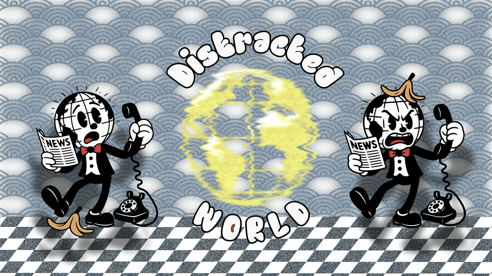

Imagine going back in time, like in old black-and-white cartoons! Radios played jazz, but just like today, people often felt lost because of *distractions*.
This website is like a map to help you find your way when your brain feels pulled everywhere at once. Here, we learn how to quiet the noise around us, focus our minds, and get to know ourselves better.
What is 'Distracted World'? It's a special way to think about how we can *wake up* and escape the things that stop us from doing our best work or reaching our goals. Things like getting easily side-tracked or spending too much time scrolling can really hold us back.
This site is full of ideas and information to help you improve yourself and grow. Becoming great isn't instant magic! It comes from the small, good choices and actions you take every single day.
Sometimes, it feels like our minds are always buzzing, looking for the next notification or exciting thing. This can make it hard to concentrate. But you *can* get your focus back! You can reset your mind and become the amazing person you're meant to be. It's time to level up!
Meet Di-Mind! He's a special character here to help you on this journey. Want to know more about him and how he helps organize thoughts? Check out the 'Organized WORLD' section!
Distracted WORLD
In a Distracted world, people often escape their day-to-day struggles by being preoccupied with the wrong things...
Organized WORLD (Enter The Ki)
Meet Di-Mind and discover how to Enter The Ki state. Transform your mind and escape the system designed to distract you...
The Blog — From the Desk of Di-Mind
Whispers from the Twilight Realm: new entries on the Lō-Ki strategy, silence, time, shadow, and reprogramming your mind to Enter The Ki...
Ready to chart your course?
Di-Mind's Accountability Ledger
Welcome to your ledger of discipline! List your daily goals (up to 10), mark them as complete, and stay the course, traveler! Summon Di-Mind when you're ready for review.
Please enter a goal.
Maximum 10 goals reached.
Today's Objectives:
Traveler's Telegram
Define Your Focus. Lost in the static? Tell The Traveler what pulls you away, or state the peak you wish to conquer today. Clear thought precedes clear action.
Your Way to Focus
Type your distraction above and click "Get Advice" to receive personalized focus guidance.
Your Daily Steps
Identify what's distracting you
Use the Get Advice button for specific guidance
Follow the suggested steps
Return to your main task with renewed focus
What is pulling your attention away right now?
Your Daily Focus Card
Imagine your goal clearly. Write it down. Read it often. Feel it as already yours. Here are three steps distilled from The Traveler's logbook to guide you:
Visualize Success: Spend 1 minute seeing your goal completed. Feel the accomplishment.
Single Task Focus: Dedicate the next focused block (e.g., 25-50 mins) ONLY to your main goal or task. No diversions.
Gratitude Break: After your focus block, pause. Appreciate one small step taken, one distraction resisted.
Repeat these steps daily. Consistency is the engine of achievement.
IN A DISTRACTED WORLD...
In a Distracted World, people often Escape their day-to-day struggles by being preoccupied with the wrong things.
Entering the state of Ki means radiating the highest Energy, Frequency, and Vibration to attract the right things into their lives. They become magnets. They need to rewire their Ki and reprogram their minds.
Once people understand that 95% of success is mindset, they realize how little inner work they do.
Success comes down to many small habits that form big habits. It's not one big thing or an overnight achievement. It's about thinking, believing, and acting in a certain way that creates these habits. It's a step-by-step process of understanding and trusting themselves and the process.
YOU MUST DECIDE NOW!
To become exceptional, focus on inner work, not just your IQ, but also your EQ and body feedback. Work intuitively.
The Mind and the Body should be in balance. A healthy mind and a healthy body create a healthy lifestyle. Once you are in balance and develop your mind and skill-set, you start to notice that you attract certain things in your life.
Visualize, grow, and develop your life. Self-analyze, self-reflect, and become your best self by updating your system that runs old, outdated beliefs. Update your Operating System (Your Mind) and quit having limiting beliefs. Life is a game. Learn to play it. Hack the system by reprogramming yourself.
We exist in an era full of distractions. It's challenging to accomplish tasks when our minds are constantly occupied with various things.
It's TIME To... ESCAPE This Distracted WORLD and... ENTER A New STATE of Consciousness
Is This You?
Do you feel stuck, not knowing what to do? ...it's time to escape the system designed to distract you!
Meet Di-Mind
Di-Mind isn't just a character; he's a reminder, a bot with a purpose.
Di-Mind's 10 Core Purposes:
Daily Goal Setting & Tracking
Hourly Focus Reminders
Progress Monitoring & Feedback
Motivation & Encouragement
Habit Formation Assistance
Distraction Detection & Alerts
Evening Achievement Review
Audiobook Recommendations
Community Connection Guidance
Achievement Celebration
Di-Mind's Daily Routine
⏰ Hourly Reminders
Every hour, his globe head lights up with a voice straight from the 1930s: "What are your goals for today?"
🎵 Audiobook Companion
With batteries or a charge, Di-Mind reads you audiobooks, making your daily grind more bearable.
🌙 Evening Review
At 23:30, he'll ask: "Have you completed your tasks?" Success brings celebration!
The Tale of Di-Mind
In the black-and-white world of the 1930s, where jazz tunes float through the air and every sound crackles with life, there lies the Distracted WORLD.
Here, everyone is lost in a maze of noise and distraction, living in a matrix of their own making.
The Lost Bot
In this land lived Di-Mind, a helpful bot with a globe for a head and a brain full of dreams. But oh, how easily those dreams got lost in the noise!
The radio blared with jazz that danced away his focus, newspapers screamed headlines that weren't his to worry over, and the chatter of the street was like a never-ending spell of confusion.
The Magical Switch
Until one day, something magical happened. A little switch, hidden beneath the chaos of his thoughts, suddenly glowed with a bright, warm light.
Di-Mind reached out, flicked the switch, and click—the world changed. The jazz became a rhythm for his work, headlines inspired him, and chatter turned into whispers of encouragement.
The Transformation
Now, Di-Mind could see through the distractions. Each moment was clear, each goal within reach. He danced through his tasks with the grace of a 1930s star.
Di-Mind became a legend in Distracted WORLD, not just for his discipline but for how he turned distractions into tools for success.
The Real Magic: Persistence
The key to Di-Mind's newfound joy was persistence. He learned that sticking to his goals, day in and day out, was what truly mattered.
With persistence, Di-Mind wasn't just surviving in Distracted WORLD; he was thriving, proving that with every small, persistent step, one could dance their way to bliss.
Are You Ready To Escape The Distracted World?
Are You Ready To Escape The System Created To Enslave You And Enter A Different State Of Mind?
Let's Do It!

The Ki State
Entering the state of Ki means radiating the highest Energy, Frequency, and Vibration to attract the right things into your life.
You become a magnet for success, focus, and purpose. It's time to rewire your Ki and reprogram your mind.
What You'll Discover
🧠 Mental Clarity: Cut through the noise and find your true purpose
🎯 Unstoppable Focus: Build the discipline to achieve anything
⚡ Energy Mastery: Harness your inner power and direct it intentionally
🏗️ Life Design: Stop drifting, start building the life you deserve
🤝 Community: Connect with others on the same journey
Ready to Transform Your Life?
Join the Distracted WORLD community and discover what happens when you stop being a victim of distraction and start being the architect of your destiny.
Limited spots available. The journey to mental freedom starts now.
What Members Are Saying
"Finally found a community that understands the struggle. The Ki state is real, and it's life-changing."
- Focus Seeker
"Di-Mind's principles helped me break free from social media addiction. I'm now 10x more productive."
- Digital Escape Artist
"The 1930s aesthetic and mindset shift approach is genius. It's like having a wise mentor in your pocket."
The first step to escaping the Distracted WORLD is recognizing the 'switch' within. Di-Mind found his, and so can you. It's not about a sudden epiphany, but about cultivating daily rituals that prime your mind for focus...
Start with intention. Before the day's noise begins, take five minutes. Breathe deeply. Ask yourself: "What single task, if completed, will make today successful?" Write it down. This is your North Star.
The Morning Anchor
Avoid the siren call of the phone for the first 30 minutes. Instead, hydrate, stretch, or simply sit in silence. Let your mind settle before the external world rushes in. This creates a buffer against immediate distraction.
Hydrate: Water first, caffeine later.
Move Gently: A few stretches awaken the body-mind connection.
Single-Task Breakfast: Eat without screens. Notice the taste, the texture.
These small acts build the foundation for a focused day. They are the first turns of the key in the ignition of your 'Disciplined Mind'.
P.S. The 'switch' isn't magic, it's muscle memory for your mind. Train it daily.
The Persistence Principle: Why Small Steps Win
Posted on
Di-Mind didn't conquer distraction overnight. His globe head didn't just *stay* disciplined. It was the steady, often unglamorous, act of persistence that truly changed his world. Grand plans often falter; consistent small steps build empires.
Think of it like water carving stone. A single drop has little effect, but relentless dripping over time creates canyons. Your focus works the same way. Trying to maintain laser focus for 8 hours straight is a recipe for burnout. Aiming for focused 25-minute blocks (like the Pomodoro Technique) is achievable and sustainable.
Embrace Imperfect Action
Waiting for the 'perfect' moment or 'perfect' plan is procrastination in disguise. Start small, even if it's just 5 minutes on your most daunting task. The act of starting breaks inertia.
Break It Down: Divide large goals into tiny, actionable steps.
Schedule It: Put focus blocks on your calendar like important meetings.
Track It: Mark off completed steps. Visual progress is motivating.
Forgive & Reset: Distractions happen. Acknowledge them, then gently redirect your focus without self-criticism.
Persistence isn't about never falling; it's about getting up one more time than you fall down. Keep stepping.
Di-Mind's Reminder: "Even the slowest progress is still progress. Don't stop the drip!"
Decoding Distractions: Know Your Enemy
Posted on
To escape the Distracted WORLD, you must first understand its landscape. Distractions aren't always obvious; they masquerade as productivity, entertainment, or even obligations. Knowing your personal kryptonite is crucial.
Are you pulled away by the endless scroll of social media? The constant ping of emails? The allure of breaking news? Or perhaps internal distractions like worry, daydreaming, or the urge to multitask?
The Distraction Audit
For one day, keep a simple log. Every time you get sidetracked from your intended task, note:
What was the trigger? (e.g., phone notification, email alert, random thought)
What was the distracting activity? (e.g., checking Instagram, reading news, browsing YouTube)
How long did it last?
What was the underlying *feeling* prompting the escape? (e.g., boredom, overwhelm, fear of the task)
This isn't about judgment; it's about awareness. Once you see the patterns, you can build defenses. If notifications are the culprit, turn them off during focus blocks. If boredom leads to scrolling, have a pre-defined, short, alternative break activity ready (like stretching or getting water).
Understanding the 'why' behind your distractions is as important as knowing the 'what'. Often, we seek distraction to avoid discomfort. Acknowledge the discomfort, then choose focus anyway.
Beyond IQ: Tuning Into Your Body's Feedback
Posted on
In the quest for focus, we often neglect a powerful ally: our own body. Di-Mind learned that true discipline wasn't just mental willpower; it involved listening to the subtle (and sometimes not-so-subtle) signals his physical form provided. Your body is constantly communicating – are you listening?
Fatigue, hunger, thirst, physical discomfort – these aren't weaknesses to be pushed through indefinitely. They are vital feedback mechanisms indicating needs that, if ignored, will inevitably sabotage your focus. Trying to concentrate when you're exhausted or your back aches is like driving with the handbrake on.
The Body Scan Break
Instead of immediately reaching for a distraction when focus wanes, take 60 seconds for a quick body scan:
Posture Check: Are you slumped? Shoulders tense? Adjust your position.
Hydration: Feeling sluggish or headachy? Drink some water.
Energy Levels: Is it genuine fatigue or just boredom? A short walk or a few jumping jacks can often reset energy if it's the latter. If truly tired, schedule a proper rest.
Physical Needs: Hungry? Need the restroom? Address basic needs promptly.
Breath: Is your breathing shallow? Take a few slow, deep breaths to calm the nervous system.
Treating your body as a partner in focus, rather than an obstacle, unlocks a more sustainable and intuitive path to productivity. Listen closely; it often knows exactly what you need to get back on track.
The Architect of Your Day – Building Focus Brick by Brick!
Posted on
Di-Mind realized that a focused life wasn't accidental; it was designed. Just as an architect blueprints a building, you must blueprint your day for focus. Leaving your schedule to chance is an open invitation for distraction to take over.
This doesn't mean rigid, minute-by-minute planning (unless that works for you!). It means intentionally allocating time and energy to what matters most. Think of your focus as a finite resource – where will you invest it today?
Blueprint Basics
Identify Your MITs: Determine your 1-3 Most Important Tasks for the day. These should align with your larger goals.
Time Blocking: Schedule specific blocks of time for deep work on your MITs. Treat these blocks like unbreakable appointments.
Batch Similar Tasks: Group shallow tasks like answering emails or making calls into dedicated blocks, rather than letting them interrupt deep work.
Plan Your Breaks: Intentionally schedule short breaks between focus blocks. Step away from your workspace, move around, hydrate.
Buffer Time: Allow for transitions between tasks and unexpected interruptions. Over-scheduling leads to stress.
Evening Review & Prep: Spend 5-10 minutes reviewing the day and outlining the next day's blueprint. This clears your mind for rest.
Becoming the architect of your day empowers you to proactively place the "bricks" of focused work, rather than reactively dealing with the rubble of distractions. Build intentionally.
Tuning Out the Static – Finding Your Signal in the Noise
Posted on
The modern world, much like the crackling radios of the 1930s, bombards us with static. Notifications, endless feeds, competing demands – they obscure the signal of what truly matters. Learning to tune out the noise is essential for hearing your own intentions.
Di-Mind found that identifying his core goals acted like an antenna, helping him filter the irrelevant static. What's your primary signal today? Is it completing a project, learning a skill, or connecting meaningfully with someone? Clarify your signal first.
Techniques for Tuning
Digital Minimalism: Ruthlessly prune apps, notifications, and subscriptions that don't serve your signal.
Information Diet: Be intentional about news and media consumption. Is it informing or just inflaming?
Dedicated Workspaces: Create physical and digital spaces free from common static sources.
Mindfulness Practice: Even brief meditation helps you notice when your mind drifts into static and gently bring it back.
You control the dial. Choose the frequency of focus over the frequency of distraction. Find your signal amidst the noise.
The Illusion of Multitasking – Why One Thing at a Time Works
Posted on
In our quest to do more, we often fall prey to the myth of multitasking. We juggle emails while on calls, draft reports while watching presentations. Di-Mind learned this the hard way – juggling looks impressive, but often leads to dropped balls and subpar results.
True multitasking is a cognitive illusion. Our brain rapidly switches between tasks, incurring a 'switching cost' each time – loss of focus, increased errors, and mental fatigue. Doing one thing with full attention is almost always more efficient and produces higher quality work.
Embracing Monotasking
Define the Task: Be crystal clear about the *one* thing you are working on right now.
Eliminate Temptations: Close unnecessary tabs, silence your phone, clear your desk.
Set a Timer: Commit to focusing solely on that one task for a set period (e.g., 25 or 50 minutes).
Batch Processing: Group similar *shallow* tasks together, but execute them one after another, not simultaneously.
Resist the urge to juggle. Give each task the respect of your undivided attention. Quality and efficiency will follow.
Fueling the Engine – The Role of Rest in Peak Performance
Posted on
We often treat focus like a sprint, pushing ourselves relentlessly until exhaustion. But Di-Mind discovered that sustained focus is more like a marathon, requiring strategic periods of rest and recovery. Trying to run on an empty tank leads only to breakdown.
Rest isn't laziness; it's essential maintenance. Sleep deprivation dulls cognitive function, impairs decision-making, and makes us more susceptible to distractions. Regular breaks throughout the day prevent burnout and allow the mind to consolidate information.
Integrating Rest Rituals
Prioritize Sleep: Aim for 7-9 hours of quality sleep. Create a relaxing bedtime routine.
Micro-Breaks: After each focus block (e.g., Pomodoro), take a 5-minute break completely away from your work. Stretch, walk, look out a window.
Macro-Breaks: Schedule longer breaks (15-30 minutes) every few hours.
Digital Sunsets: Disconnect from screens at least an hour before bed.
True Downtime: Ensure you have leisure activities that genuinely recharge you, not just numb you (e.g., hobbies, nature, time with loved ones vs. endless scrolling).
Fuel your focus engine with adequate rest. A well-rested mind is a focused mind.
Crafting Your 'Do Not Disturb' Sign for the Mind
Posted on
In the interconnected world, demands constantly knock at the door of our attention. To achieve deep focus, you need to metaphorically hang a 'Do Not Disturb' sign on your mind. This means setting clear boundaries – with technology, with others, and even with yourself.
Di-Mind learned that without boundaries, his focus was constantly fragmented by external requests and internal whims. Protecting your focus time is not selfish; it's necessary for producing meaningful work.
Building Your Boundaries
Communicate Availability: Let colleagues or family know your focus times and when you'll be available for interruptions.
Manage Notifications: Turn off non-essential alerts during work blocks. Check messages intentionally, not reactively.
Physical Space: If possible, work in a space where interruptions are less likely. Headphones can be a universal 'do not disturb' signal.
Time Boundaries: Define clear start and end times for your workday to prevent work from bleeding into personal time.
Internal Boundaries: When distracting thoughts arise during focus time, acknowledge them briefly and 'park' them (e.g., write them down) to address later.
Hang your sign. Protect your focus. Your best work depends on it.
The Power of 'No' – Reclaiming Your Time and Energy
Posted on
One of the most potent tools in Di-Mind's focus arsenal was surprisingly simple: the word 'No'. In a world that encourages us to say 'yes' to every opportunity and request, learning to decline strategically is vital for preserving the time and energy needed for our core priorities.
Every 'yes' carries an implicit cost – the time and focus you *won't* be spending on something else. Over-commitment leads to scattered attention, mediocre results, and burnout. Saying 'no' isn't about being unhelpful; it's about being realistic and prioritizing effectively.
Wielding 'No' Wisely
Align with Priorities: Does the request align with your main goals and values? If not, it's a candidate for 'no'.
Be Polite but Firm: You don't always need lengthy explanations. "Thank you for thinking of me, but I can't take that on right now," is often sufficient.
Offer Alternatives (Optional): If appropriate, suggest another resource, delegate, or propose involvement at a later time.
Protect Your Focus Blocks: Be particularly stringent about saying 'no' to interruptions during scheduled deep work time.
Say 'No' to Yourself: Decline the urge to chase every shiny new idea or distraction that pops into your head. Stick to the plan.
Mastering the art of the graceful 'no' frees up invaluable resources for the things that truly move the needle. Reclaim your focus by reclaiming your right to decline.
Celebrating Small Wins – Momentum in the Making
Posted on
The journey out of the Distracted WORLD can feel long. Focusing solely on the distant finish line can be demotivating. Di-Mind found immense power in acknowledging and celebrating the small victories along the way. These small wins build momentum and fuel persistence.
Completing a focus block, tackling a dreaded small task, resisting a distraction, sticking to a routine – these are all wins worth recognizing. They prove to your brain that progress is happening, reinforcing positive habits and making it easier to stay the course.
Building a Win Streak
Track Progress Visibly: Use checklists, habit trackers, or simply mark off tasks. Seeing progress is inherently rewarding.
Acknowledge Effort: Congratulate yourself internally for sticking to your plan, even if the outcome wasn't perfect.
Share Wins (Appropriately): Mentioning progress to a supportive friend or mentor can amplify the positive feeling.
Tiny Rewards: Link completion of a challenging task or a consistent streak to a small, healthy reward (e.g., a short walk, listening to a favorite song, enjoying a cup of tea).
End-of-Day Review: Briefly list 1-3 things you accomplished or focused well on today.
Don't wait for the mountain peak to celebrate. Acknowledge each successful step up the slope. Momentum is built one small win at a time.
The Reflective Pause – Learning from Your Distracted Moments
Posted on
Getting distracted is inevitable; staying distracted is a choice. Di-Mind learned that moments of lost focus weren't failures, but valuable data points. Instead of self-criticism, he cultivated a habit of reflective pause to understand *why* the distraction occurred.
When you find yourself off-task, resist the urge to jump back immediately with frustration. Take a breath and ask: What triggered this? Was the task unclear? Was I tired or hungry? Was I avoiding something difficult? What need was the distraction trying to meet?
Turning Distraction into Insight
Non-Judgmental Observation: Notice the pattern without labeling it 'good' or 'bad'.
Identify the Root Cause: Look beyond the surface activity (e.g., scrolling) to the underlying reason (e.g., boredom, anxiety).
Adjust Strategy: Based on the insight, tweak your approach. Need clearer steps? A short break? A different environment?
Practice Self-Compassion: Acknowledge that focus is a skill under constant development. Be kind to yourself.
Keep a Brief Log: Jotting down recurring distraction patterns can reveal deeper issues to address.
Use your distracted moments not as proof of failure, but as opportunities to refine your focus strategies and understand your own mind better.
Di-Mind's Blueprint – A Life Designed, Not Defaulted
Posted on
Ultimately, escaping the Distracted WORLD isn't just about managing tasks; it's about designing a life aligned with your values and intentions. Di-Mind's transformation wasn't just about productivity hacks; it was about consciously choosing how to spend his limited time and attention.
Are you living by default, reacting to whatever the world throws at you? Or are you living by design, intentionally directing your focus towards what truly matters? This requires ongoing reflection and conscious choice.
Elements of a Designed Life
Clarity of Values: What is genuinely important to you (e.g., growth, connection, creativity, health)?
Goal Alignment: Do your daily actions and focus areas support your core values and long-term goals?
Intentional Consumption: Choose information, entertainment, and relationships that nourish rather than drain you.
Regular Review: Periodically step back (weekly, monthly) to assess if your actions align with your blueprint. Adjust as needed.
Embracing Agency: Recognize that you have the power to choose where your attention goes, even amidst the noise.
Don't just drift through the Distracted WORLD. Pick up your architect's tools – your values, your goals, your attention – and start designing a life of focus and purpose. Create your own blueprint.
Keep It Lō-Ki – Build in the Shadows
Posted on
The Distracted WORLD runs on noise. Hype, hot takes, unsolicited advice, and a bottomless hunger for validation — every day we are asked to broadcast everything, instantly, to everyone. There is another frequency, quieter and older: ローキー, the Lō-Ki way. To keep it Lō-Ki is to operate low: build in the shadows, work your plan, and let your results make the sound your mouth never did.
This is not hiding. It is strategy. Announced plans invite opinions; unfinished dreams start to feel real the moment everyone claps for them, and applause before achievement is the most elegant form of distraction. The Lō-Ki traveler protects the fragile, early state of a vision like a flame cupped in two hands.
The Lō-Ki Protocol
Set your compass, not your broadcast: Decide exactly what you want — in writing — and keep it between you and the Power within.
Trade noise for reps: Every hour of scrolling is an hour of practice you didn't take. Silence is where the reps compound.
Report to results, not reactions: Let finished work speak. If it flops, nobody watched you fall; if it lands, the story is yours alone.
Choose your room: Spend your energy where it compounds — craft, health, faith — and default to quiet everywhere else.
The paradox of moving silently is that it attracts the right people, not the loudest ones. They notice the work, not the noise. Over months, the gap between the silent builder and the loud announcer becomes a canyon.
Di-Mind's Reminder: "A garden grows in the dark long before anyone sees a single bloom. Keep it Lō-Ki."
On Silence – Where the Answers Hide
Posted on
An ancient entry from the Owl's Journal reads: in the silence between words, and the void between thoughts, the subconscious mind provides the answers we seek in the noise. The Owl lives in the Twilight Realm — the hour between day and dark — and it hoots only where the world has gone quiet enough to hear it.
Notice the pattern in your own life: every true insight, every decision that actually changed something, arrived in stillness — in the shower, on a walk, at 3 AM before sleep. Never mid-scroll. The noise of the Distracted WORLD drowns the transmission; silence is the antenna.
A Small Practice of Stillness
Ten minutes, no input: Sit without music, phone or podcast. Let the static in your own head play out until it runs down.
Ask one question: Before the silence begins, ask plainly: "What is the next right step?" Then simply listen.
Breathe into it: Five slow, deep breaths. A quiet body is easier for a quiet mind to live in.
Write what arrives: Keep a journal. The subconscious answers; ink is how you keep the audiotape.
Guard the crackle: Keep one daily pocket of quiet sacred — the way islanders guard their wells.
You will never silence the Distracted WORLD. You can only decide where you are loud and where you are still. Be still where the answers live.
Di-Mind's Reminder: "The Owl never hoots in the daylight. Find your twilight."
The Eternal Now – On the Illusion of Time
Posted on
Another ancient entry: the past is memory, the future is imagination. The present moment is the only true reality. Yet almost all distraction lives in the other two places — replaying yesterdays as regret or rehearsing tomorrows as anxiety. Very little of the noise you fight today actually exists today.
Nostalgia gets a soft pass in our world — imaginary nostalgia, filtered memories, the crackle of old jazz — and it can be beautiful. But notice: it is only powerful because it feels alive in this present second. Same for fear of the future. The power is always banked in the Now; we only keep withdrawing it into places it cannot spend.
Return to the Now
Anchor in the body: Feel your feet, your breath, the chair. The Now is physical before it is philosophical.
Name the next physical action: Not the whole plan — the next step of one task, done today, in this hour.
Single-task that step: Future and past cannot enter a door this narrow.
Close the day deliberately: Tonight's review clears tomorrow's anxiety. A clean ledger sleeps well.
Eternal now is not a demand to hurry. It is permission: you do not need to fix your whole life this instant — only this instant. Done consistently, that is how whole lives get rebuilt.
Di-Mind's Reminder: "You cannot wind a clock that doesn't exist. Stay with the one in your chest."
On the Nature of Shadow
Posted on
The third ancient entry: darkness is not the absence of light, but a partner in the eternal dance of seeing. The shadow in the corner proves the lamp works. So it goes within: the parts of yourself you keep unlit — the procrastinator, the doubter, the bitter one, the one that trades dreams for comfort — are not enemies. They are partners waiting to be put to work.
Fighting your shadow rarely works; what you deny only grows louder and operates you from behind. Making peace with it does. The Distracted WORLD profits enormously from your unlived, unfaced inner hours — the 1930s radio static was bad enough, but the algorithm knows exactly which shadow talks to you at midnight.
Make Peace with Your Shadow
Name it: Write the pattern down plainly. "When I feel behind, I numb out with feeds." Naming removes its invisibility bonus.
Ask what it protects: Every distraction guards a wound or a fear. Quietly ask: what are you keeping me from feeling?
Give it a job: The procrastinator becomes the one who rehearses; the doubter becomes the editor. Redirect the energy instead of condemning it.
Walk with it, don't obey it: Feel the urge to escape rising? Acknowledge it, then choose focus anyway. Shadow respected, not obeyed.
When the shadow is known, the high-Ki self takes the stage and the dark simply frames the light. You cannot escape the Distracted WORLD carrying a stranger under your arm — carry a friend instead.
Di-Mind's Reminder: "The lamp needs the edge of the room to prove it shines."
Feeling Is the Secret – The Three Rules of 'It Works'
Posted on
Among the classics of New Thought — As a Man Thinketh, Think and Grow Rich, The Master Key System — sits the smallest book of them all: It Works by R.H. Jarrett, "the famous little red book." Its power is that it refuses to be complicated. It gives three rules and trusts you to do them:
Write down, in order, exactly what you want — and read the list three times each day: once on arising, once in the middle of the day, once just before sleep.
Think of it as often as you possibly can: every idle moment is a seed to plant. The subconscious does not distinguish between a wandering thought and a directed one — direct it.
Speak of it to no one but the Power within: this is why the Lō-Ki traveler sails without announcements. Talked-about plans leak; kept plans charge.
Why It Works (Works)
Modern psychology nods along: clearly expressed goals outrank vague wishes; repetition deepens neural pathways; a felt outcome beats a described one; keeping it private protects the fragile identity of the future self. Jarrett's genius was compressing all of it into something a busy mind can remember.
The catch is feeling. Reading the list while believing it is another entry in the ledger of dreams produces nothing. Read it the way you speak of something already agreed — calm, certain, done. The subconscious follows the feeling, not the grammar.
If you're unsure where to begin, open Goals in the navigation and use Di-Mind's Accountability Ledger tonight. Your three daily reads can be between you and the Power within — and nobody else.
Di-Mind's Reminder: "Read the list three times yesterday? Today counts double. Always start again today."
From NPC to PC – Reprogram Your Mental Operating System
Posted on
In the Distracted WORLD, most people run on default settings. They wake up to a screen, react to whatever glows, absorb whatever they're told, and repeat — the NPC state, a life played as the background character of someone else's world. Entering the state of Ki is stepping out of it: radiating the highest energy, frequency and vibration, and playing as the main character — the PC — of your own story.
Your mind is an operating system, and yours likely still runs beliefs installed long ago by frightened people or loud mirrors: "I'm not the focused type." "I always procrastinate." "I'm just not that consistent." These are not facts; they are outdated firmware. Life is a game. Learn to play it. Hack the system by reprogramming yourself.
The Reprogramming Protocol
Audit your inputs: For one day, log what you consume. Every feed is a script suggestion. Cancel the ones you didn't choose.
Overwrite limiting beliefs: For each "I can't," write its controllable replacement and repeat it like an affirmation until it feels native. Say them with feeling — feeling is the secret.
Decide your non-negotiables: Stillness, movement, pages read, work created, sleep. Small habits compound into big habits; they compound whether you choose them or not — so choose.
Run the evening patch: Review the day, mark the wins, schedule tomorrow. Di-Mind's ledger exists exactly for this.
Persist: Reprogramming is boring in the middle and magic at the end. Persistence is the real magic.
95% of success is mindset, and mindset is not a mood — it is an updated system running fresh code every single day. The Distracted WORLD would love you to stay an NPC. You are not background noise. Flick the switch.
Di-Mind's Reminder: "The NPCs await instructions. The player writes their own. Log into the Ledger."